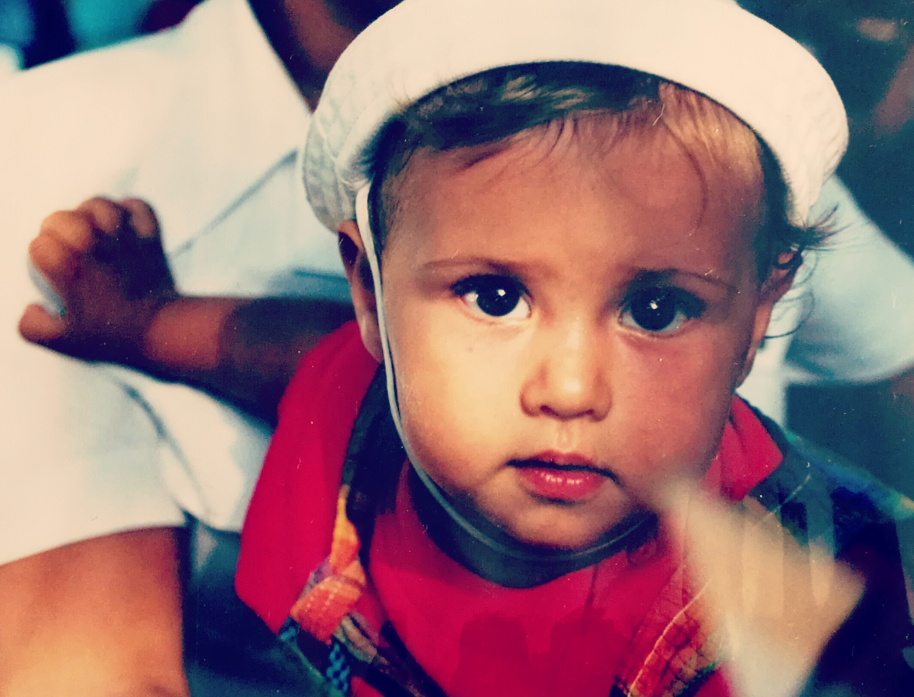

Sobre mi
¿Quién es David?
Su saludo es una sonrisa, su mirada emoción y su actitud pasión.

Todo ello asomó muy pronto en su vida. David Maestro fue un niño espoleado por una mente inquieta que,
no obstante, sabía adaptarse a cualquier circunstancia sin perder su entusiasmo,
cualidades que, sin duda, le han servido para jugar con la ilusión del público y atraerlo
sin remisión hacia su mundo mágico.
David Maestro es un mago que nació en A Coruña hace 21 años, aunque pasó toda su
niñez y parte de la juventud en Vigo. Quiso ser muchas cosas, desde muy pronto buscó
su camino y lo encontró rápido. La magia empapó todo su mundo, es la meta y es el
camino. Su compromiso con la magia va más allá del espectáculo, siempre tiene una
baraja en el bolsillo para sorprender con un juego y mostrar mucho de sí mismo a
través de su talento.
En el Colegio Martín Codax de Vigo y con apenas 12 años, comenzó su idilio con la
magia acompañado de su buen amigo Anxo Rojo. Allí recibió clases de teatro y se subió
por primera vez a un escenario. Descubrió una vocación y ha sido tenaz defendiendo
su sueño. Volvió a la ciudad herculina para cursar Sociología y compatibiliza sus
estudios con los focos.

Con los focos y con la calle, que ha sido su particular teatro muchas veces, desde sus
primeras experiencias siendo un niño hasta hace muy poco. Los paseantes de la calle
Real de A Coruña o de la calle Príncipe de Vigo han podido disfrutar de un espectáculo
original y elegante. Nunca ha dejado impasible al público. Siempre ha sabido captar su
atención y ha logrado convertirse durante un rato en el conductor de sus sueños.
Al tiempo que lee a Mark Granovetter o Robert Putnam para entender nuestra
sociedad, continúa trabajando muy duro su técnica y madurando como artista. Con
sólo 19 años se presentó a su primer casting y fue uno de los concursantes elegidos
para participar en el primer concurso de magia que se ha hecho en Televisión: “Pura
Magia”, emitido en TVE 1, donde llegó a la semifinal y cautivó con su elegancia y
ternura al público.
Javier Cárdenas se fijó en él y fue colaborador del programa que el conocido
comunicador ha comandado en el mismo canal “Hora Punta”, donde ha divertido y
asombrado a sus invitados. Los protagonistas y el director de la película para
representar a España en los Oscar 2019, “Campeones”, la diva de la canción española
Mónica Naranjo o los artistas de la generación OT 2017 han comprobado con David
que lo imposible a veces es posible.

La magia es para todos los públicos pero los más pequeños tienen la mente pura, se
acercan a ella con toda la libertad, lo que les permite recibirla en toda su dimensión.